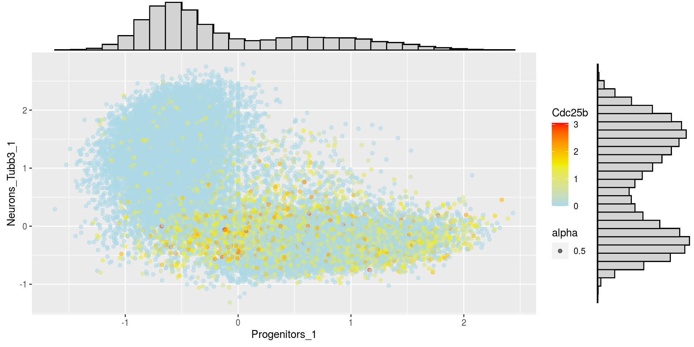
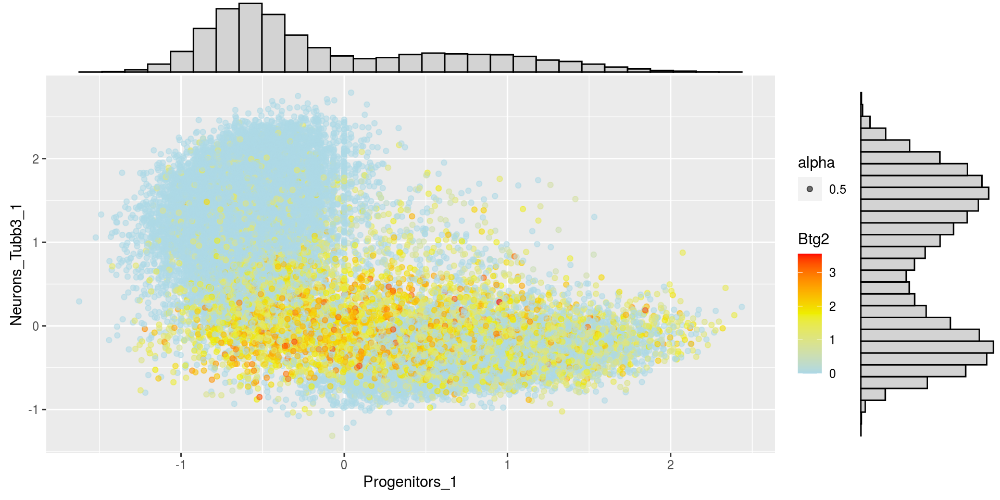
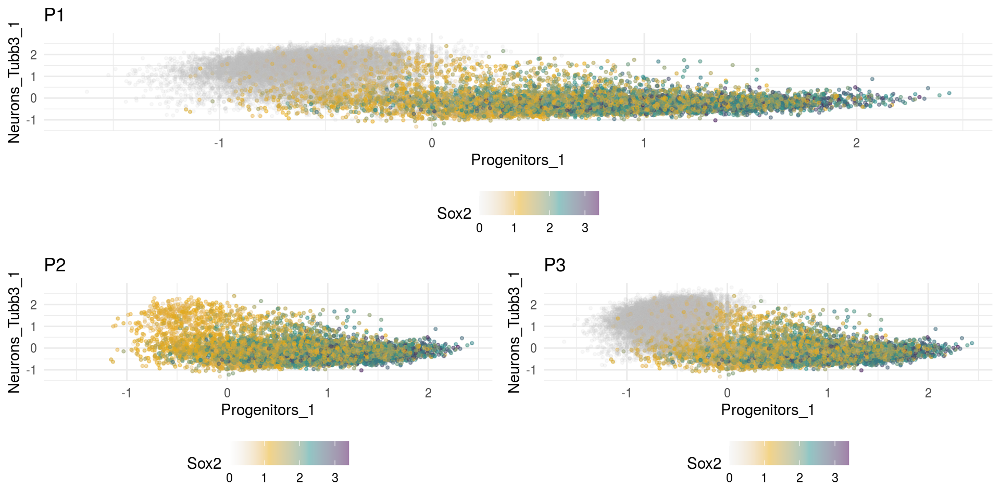
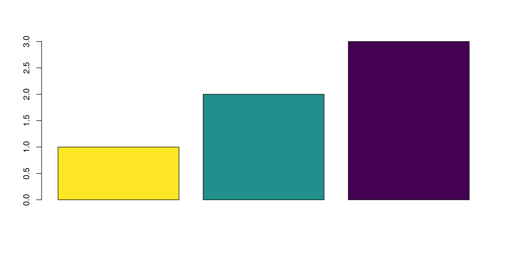

5 Show markers expression on signature score plots
for (marker in markers){
print(marker)
dat.seurat@meta.data[[marker]] <- dat.seurat@assays$RNA@data[marker,]
print(summary(dat.seurat@meta.data[[marker]]))
print(ggMarginal(
ggplot(dat.seurat@meta.data, aes(x = Progenitors_1, y = Neurons_Tubb3_1, alpha = 0.5)) +
geom_point(aes_string(color = marker)) +
scale_color_gradientn(colors = c("lightblue", "yellow2", "red")),
type = "histogram", fill="lightgrey"))
}
## [1] "Btg2"
## Min. 1st Qu. Median Mean 3rd Qu. Max.
## 0.0000 0.0000 0.0000 0.3717 0.6378 3.5557
## [1] "Sox1"
## Min. 1st Qu. Median Mean 3rd Qu. Max.
## 0.00000 0.00000 0.00000 0.06155 0.00000 2.60269
## [1] "Sox2"
## Min. 1st Qu. Median Mean 3rd Qu. Max.
## 0.000 0.000 0.000 0.591 1.247 3.396
## [1] "Sox3"
## Min. 1st Qu. Median Mean 3rd Qu. Max.
## 0.00000 0.00000 0.00000 0.06799 0.00000 2.47830
## [1] "Tubb3"
## Min. 1st Qu. Median Mean 3rd Qu. Max.
## 0.000 1.188 2.789 2.307 3.365 4.718
## [1] "Olig2"
## Min. 1st Qu. Median Mean 3rd Qu. Max.
## 0.00000 0.00000 0.00000 0.02355 0.00000 2.88069
## [1] "Pax6"
## Min. 1st Qu. Median Mean 3rd Qu. Max.
## 0.0000 0.0000 0.0000 0.3283 0.0000 4.2669
## [1] "Pax7"
## Min. 1st Qu. Median Mean 3rd Qu. Max.
## 0.00000 0.00000 0.00000 0.07511 0.00000 2.52612
## [1] "Isl1"
## Min. 1st Qu. Median Mean 3rd Qu. Max.
## 0.0000 0.0000 0.0000 0.1392 0.0000 4.0365
## [1] "Isl2"
## Min. 1st Qu. Median Mean 3rd Qu. Max.
## 0.00000 0.00000 0.00000 0.02754 0.00000 2.58664
## [1] "Notch1"
## Min. 1st Qu. Median Mean 3rd Qu. Max.
## 0.0000 0.0000 0.0000 0.2885 0.0000 2.8345
## [1] "Dll1"
## Min. 1st Qu. Median Mean 3rd Qu. Max.
## 0.0000 0.0000 0.0000 0.1785 0.0000 3.0640
## [1] "Cdc25b"
## Min. 1st Qu. Median Mean 3rd Qu. Max.
## 0.0000 0.0000 0.0000 0.1975 0.0000 3.0537## [1] "Btg2"## Min. 1st Qu. Median Mean 3rd Qu. Max.
## 0.0000 0.0000 0.0000 0.3717 0.6378 3.5557
## [1] "Sox2"## Min. 1st Qu. Median Mean 3rd Qu. Max.
## 0.000 0.000 0.000 0.591 1.247 3.396## Loading required package: grid